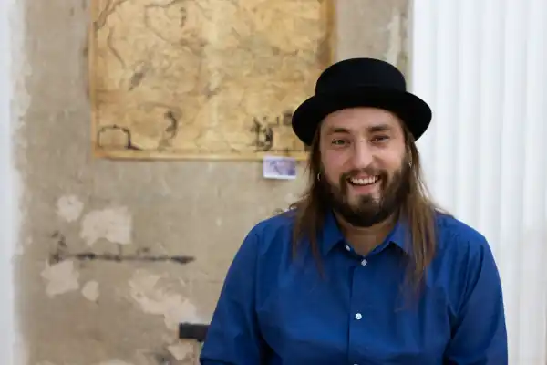

Сергій Соловій — український музикант, трубач гурту "Kozak System" (до 2012 року був учасником гурту "Гайдамаки").
Народився 19 травня 1986 року в місті Борщеві, що на Тернопільщині.
Освіта: Київський інститут музики ім. Р. М. Глієра. У 2006 році Сергій Соловій (труба, дримба) ввійшов до першого складу гурту ДримбаДаДзиґа. З 2010 року бере лише часткову участь в діяльності ДримбаДаДзиґи, бо з лютого 2010 приєднується до Гайдамаків. З 2012 року в гурті Козак Систем. Ставиться з повагою до усього, що може називатися музикою. Літературна мрія життя — прочитати усю класику.